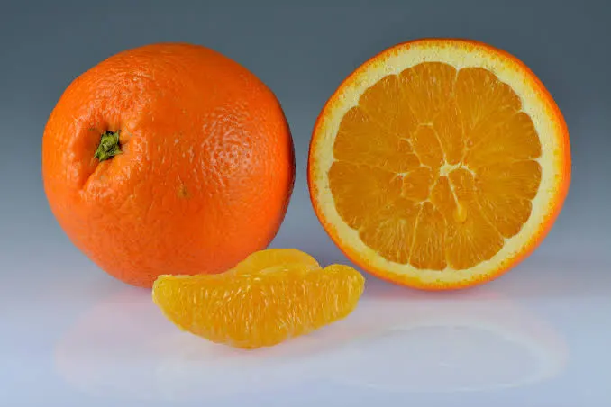

What is an orange?
An orange is a round fruit that grows on citrus trees. It has a tough outer peel (skin) and soft, juicy segments
inside. Oranges can be eaten fresh or used to make juice. It is a popular citrus fruit known for its bright
color, juicy flesh, and refreshing taste.
Nutritional benefits
Oranges are very healthy and contain:
Vitamin C – helps boost the immune system
Fiber – supports digestion
Antioxidants – protect the body from damage
Water – helps keep you hydrated
Types of oranges
Some common types include:
Sweet oranges – the most commonly eaten
Blood oranges – have red-colored flesh
Mandarins – smaller and easier to peel
Health benefits
Eating oranges can:
Uses of oranges
Added to salads and desserts
Used in cooking and flavoring
To know more about Orange, click more